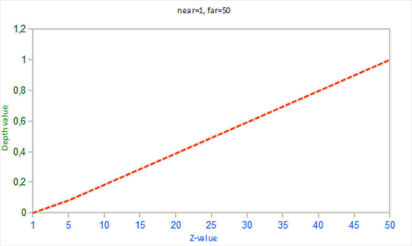

深度测试
| 原文 | Depth testing |
|---|---|
| 作者 | JoeyDeVries |
| 翻译 | Krasjet |
| 校对 | 暂未校对 |
在坐标系统小节中，我们渲染了一个3D箱子，并且运用了
深度缓冲就像
当深度测试(Depth Testing)被启用的时候，OpenGL会将一个片段的深度值与深度缓冲的内容进行对比。OpenGL会执行一个深度测试，如果这个测试通过了的话，深度缓冲将会更新为新的深度值。如果深度测试失败了，片段将会被丢弃。
深度缓冲是在片段着色器运行之后（以及模板测试(Stencil Testing)运行之后，我们将在下一节中讨论）在屏幕空间中运行的。屏幕空间坐标与通过OpenGL的
Important
现在大部分的GPU都提供一个叫做提前深度测试(Early Depth Testing)的硬件特性。提前深度测试允许深度测试在片段着色器之前运行。只要我们清楚一个片段永远不会是可见的（它在其他物体之后），我们就能提前丢弃这个片段。
片段着色器通常开销都是很大的，所以我们应该尽可能避免运行它们。当使用提前深度测试时，片段着色器的一个限制是你不能写入片段的深度值。如果一个片段着色器对它的深度值进行了写入，提前深度测试是不可能的。OpenGL不能提前知道深度值。
深度测试默认是禁用的，所以如果要启用深度测试的话，我们需要用GL_DEPTH_TEST选项来启用它：
glEnable(GL_DEPTH_TEST);
当它启用的时候，如果一个片段通过了深度测试的话，OpenGL会在深度缓冲中储存该片段的z值；如果没有通过深度缓冲，则会丢弃该片段。如果你启用了深度缓冲，你还应该在每个渲染迭代之前使用GL_DEPTH_BUFFER_BIT来清除深度缓冲，否则你会仍在使用上一次渲染迭代中的写入的深度值：
glClear(GL_COLOR_BUFFER_BIT | GL_DEPTH_BUFFER_BIT);
可以想象，在某些情况下你会需要对所有片段都执行深度测试并丢弃相应的片段，但不希望更新深度缓冲。基本上来说，你在使用一个GL_FALSE就可以了：
glDepthMask(GL_FALSE);
注意这只在深度测试被启用的时候才有效果。
深度测试函数
OpenGL允许我们修改深度测试中使用的比较运算符。这允许我们来控制OpenGL什么时候该通过或丢弃一个片段，什么时候去更新深度缓冲。我们可以调用
glDepthFunc(GL_LESS);
这个函数接受下面表格中的比较运算符：
| 函数 | 描述 |
|---|---|
| GL_ALWAYS | 永远通过深度测试 |
| GL_NEVER | 永远不通过深度测试 |
| GL_LESS | 在片段深度值小于缓冲的深度值时通过测试 |
| GL_EQUAL | 在片段深度值等于缓冲区的深度值时通过测试 |
| GL_LEQUAL | 在片段深度值小于等于缓冲区的深度值时通过测试 |
| GL_GREATER | 在片段深度值大于缓冲区的深度值时通过测试 |
| GL_NOTEQUAL | 在片段深度值不等于缓冲区的深度值时通过测试 |
| GL_GEQUAL | 在片段深度值大于等于缓冲区的深度值时通过测试 |
默认情况下使用的深度函数是GL_LESS，它将会丢弃深度值大于等于当前深度缓冲值的所有片段。
让我们看看改变深度函数会对视觉输出有什么影响。我们将使用一个新的代码配置，它会显示一个没有光照的基本场景，里面有两个有纹理的立方体，放置在一个有纹理的地板上。你可以在这里找到源代码。
在源代码中，我们将深度函数改为GL_ALWAYS：
glEnable(GL_DEPTH_TEST);
glDepthFunc(GL_ALWAYS);
这将会模拟我们没有启用深度测试时所得到的结果。深度测试将会永远通过，所以最后绘制的片段将会总是会渲染在之前绘制片段的上面，即使之前绘制的片段本就应该渲染在最前面。因为我们是最后渲染地板的，它会覆盖所有的箱子片段：
将它重新设置为GL_LESS，这会将场景还原为原有的样子：
深度值精度
深度缓冲包含了一个介于0.0和1.0之间的深度值，它将会与观察者视角所看见的场景中所有物体的z值进行比较。观察空间的z值可能是投影平截头体的近平面(Near)和远平面(Far)之间的任何值。我们需要一种方式来将这些观察空间的z值变换到[0, 1]范围之间，其中的一种方式就是将它们线性变换到[0, 1]范围之间。下面这个（线性）方程将z值变换到了0.0到1.0之间的深度值：
这里的和值是我们之前提供给投影矩阵设置可视平截头体的（见坐标系统）那个 near 和 far 值。这个方程需要平截头体中的一个z值，并将它变换到了[0, 1]的范围中。z值和对应的深度值之间的关系可以在下图中看到：

Important
注意所有的方程都会将非常近的物体的深度值设置为接近0.0的值，而当物体非常接近远平面的时候，它的深度值会非常接近1.0。
然而，在实践中是几乎永远不会使用这样的
由于非线性方程与 1/z 成正比，在1.0和2.0之间的z值将会变换至1.0到0.5之间的深度值，这就是一个float提供给我们的一半精度了，这在z值很小的情况下提供了非常大的精度。在50.0和100.0之间的z值将会只占2%的float精度，这正是我们所需要的。这样的一个考虑了远近距离的方程是这样的：
如果你不知道这个方程是怎么回事也不用担心。重要的是要记住深度缓冲中的值在屏幕空间中不是线性的（在透视矩阵应用之前在观察空间中是线性的）。深度缓冲中0.5的值并不代表着物体的z值是位于平截头体的中间了，这个顶点的z值实际上非常接近近平面！你可以在下图中看到z值和最终的深度缓冲值之间的非线性关系：

可以看到，深度值很大一部分是由很小的z值所决定的，这给了近处的物体很大的深度精度。这个（从观察者的视角）变换z值的方程是嵌入在投影矩阵中的，所以当我们想将一个顶点坐标从观察空间至裁剪空间的时候这个非线性方程就被应用了。如果你想深度了解投影矩阵究竟做了什么，我建议阅读这篇文章。
如果我们想要可视化深度缓冲的话，非线性方程的效果很快就会变得很清楚。
深度缓冲的可视化
我们知道片段着色器中，内建gl_FragCoord向量的z值包含了那个特定片段的深度值。如果我们将这个深度值输出为颜色，我们可以显示场景中所有片段的深度值。我们可以根据片段的深度值返回一个颜色向量来完成这一工作：
void main()
{
FragColor = vec4(vec3(gl_FragCoord.z), 1.0);
}
如果你再次运行程序的话，你可能会注意到所有东西都是白色的，看起来就想我们所有的深度值都是最大的1.0。所以为什么没有靠近0.0（即变暗）的深度值呢？
你可能还记得在上一部分中说到，屏幕空间中的深度值是非线性的，即它在z值很小的时候有很高的精度，而z值很大的时候有较低的精度。片段的深度值会随着距离迅速增加，所以几乎所有的顶点的深度值都是接近于1.0的。如果我们小心地靠近物体，你可能会最终注意到颜色会渐渐变暗，显示它们的z值在逐渐变小：
这很清楚地展示了深度值的非线性性质。近处的物体比起远处的物体对深度值有着更大的影响。只需要移动几厘米就能让颜色从暗完全变白。
然而，我们也可以让片段非线性的深度值变换为线性的。要实现这个，我们需要仅仅反转深度值的投影变换。这也就意味着我们需要首先将深度值从[0, 1]范围重新变换到[-1, 1]范围的标准化设备坐标（裁剪空间）。接下来我们需要像投影矩阵那样反转这个非线性方程（方程2），并将这个反转的方程应用到最终的深度值上。最终的结果就是一个线性的深度值了。听起来是可行的，对吧？
首先我们将深度值变换为NDC，不是非常困难：
float ndc = depth * 2.0 - 1.0;
接下来使用获取到的NDC值，应用逆变换来获取线性的深度值：
float linearDepth = (2.0 * near * far) / (far + near - ndc * (far - near));
这个方程是用投影矩阵推导得出的，它使用了方程2来非线性化深度值，返回一个near与far之间的深度值。这篇注重数学的文章为感兴趣的读者详细解释了投影矩阵，它也展示了这些方程是怎么来的。
将屏幕空间中非线性的深度值变换至线性深度值的完整片段着色器如下：
#version 330 core
out vec4 FragColor;
float near = 0.1;
float far = 100.0;
float LinearizeDepth(float depth)
{
float z = depth * 2.0 - 1.0; // 转换为 NDC
return (2.0 * near * far) / (far + near - z * (far - near));
}
void main()
{
float depth = LinearizeDepth(gl_FragCoord.z) / far; // 为了演示除以 far
FragColor = vec4(vec3(depth), 1.0);
}
由于线性化的深度值处于near与far之间，它的大部分值都会大于1.0并显示为完全的白色。通过在
如果我们现在运行程序，我们就能看见深度值随着距离增大是线性的了。尝试在场景中移动，看看深度值是怎样以线性变化的。
颜色大部分都是黑色，因为深度值的范围是0.1的近平面到100的远平面，它离我们还是非常远的。结果就是，我们相对靠近近平面，所以会得到更低的（更暗的）深度值。
深度冲突
一个很常见的视觉错误会在两个平面或者三角形非常紧密地平行排列在一起时会发生，深度缓冲没有足够的精度来决定两个形状哪个在前面。结果就是这两个形状不断地在切换前后顺序，这会导致很奇怪的花纹。这个现象叫做
在我们一直使用的场景中，有几个地方的深度冲突还是非常明显的。箱子被放置在地板的同一高度上，这也就意味着箱子的底面和地板是共面的(Coplanar)。这两个面的深度值都是一样的，所以深度测试没有办法决定应该显示哪一个。
如果你将摄像机移动到其中一个箱子的内部，你就能清楚地看到这个效果的，箱子的底部不断地在箱子底面与地板之间切换，形成一个锯齿的花纹：
深度冲突是深度缓冲的一个常见问题，当物体在远处时效果会更明显（因为深度缓冲在z值比较大的时候有着更小的精度）。深度冲突不能够被完全避免，但一般会有一些技巧有助于在你的场景中减轻或者完全避免深度冲突、
防止深度冲突
第一个也是最重要的技巧是永远不要把多个物体摆得太靠近，以至于它们的一些三角形会重叠。通过在两个物体之间设置一个用户无法注意到的偏移值，你可以完全避免这两个物体之间的深度冲突。在箱子和地板的例子中，我们可以将箱子沿着正y轴稍微移动一点。箱子位置的这点微小改变将不太可能被注意到，但它能够完全减少深度冲突的发生。然而，这需要对每个物体都手动调整，并且需要进行彻底的测试来保证场景中没有物体会产生深度冲突。
第二个技巧是尽可能将近平面设置远一些。在前面我们提到了精度在靠近近平面时是非常高的，所以如果我们将近平面远离观察者，我们将会对整个平截头体有着更大的精度。然而，将近平面设置太远将会导致近处的物体被裁剪掉，所以这通常需要实验和微调来决定最适合你的场景的近平面距离。
另外一个很好的技巧是牺牲一些性能，使用更高精度的深度缓冲。大部分深度缓冲的精度都是24位的，但现在大部分的显卡都支持32位的深度缓冲，这将会极大地提高精度。所以，牺牲掉一些性能，你就能获得更高精度的深度测试，减少深度冲突。
我们上面讨论的三个技术是最普遍也是很容易实现的抗深度冲突技术了。还有一些更复杂的技术，但它们依然不能完全消除深度冲突。深度冲突是一个常见的问题，但如果你组合使用了上面列举出来的技术，你可能不会再需要处理深度冲突了。